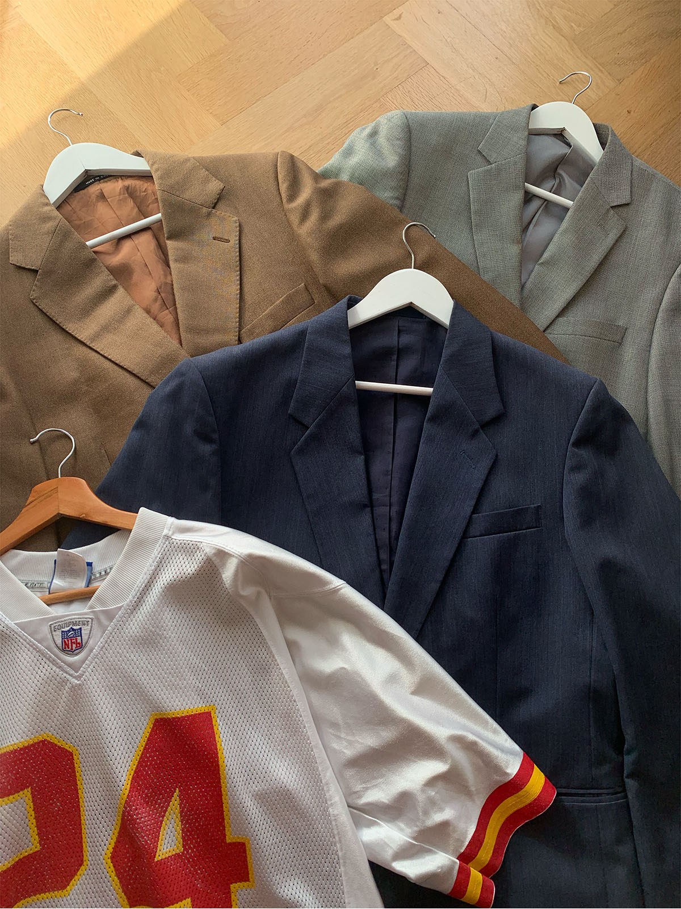

Vintage kleding is belangrijk om de wereld een handje te helpen
"Upcylen is niet alleen goed voor het klimaat, ook leuk"
Klimaat & Vintage kleding
Duurzaamheid, vintage kleding is een duurzame keuze. De Fast Fashion wereld is heel erg groot tegenwoordig. Er wordt zo snel mogelijk en zo veel mogelijk kleding geproduceerd. Door vintage kleding te kopen vermindert dit veel dingen zoals: De vraag van productie vermindert, de milieu-impact van de kledingindustrie vermindert waardoor vervuiling en consumptie wordt beperkt.
Wat kan jij doen?
Er zijn meerdere dingen die jij kan doen om te helpen. Door bij vintage winkels te kopen inplaats van bij Fast Fashion ketens zoals de Zara en H&M. Vintage kleding is vaak ook beter vakmanschap en gaat dus langer mee.
Wij hebben met duurzaamheid in ons hoofd een concept uitgewerkt om op een leuke manier vintage kleding op te fleuren of om je oude kleding een boost geven.
DIY inspiratie hebben wij voor jou ontworpen.